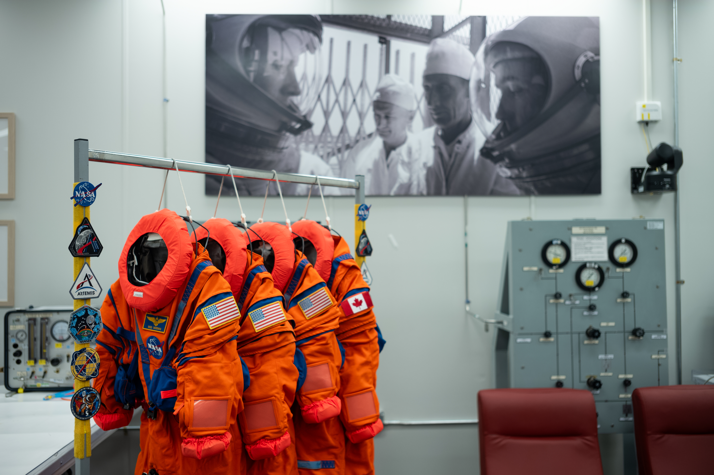

|
THE JOURNEY / 01
Welcome to the Moon Mission Recap!
A historic journey around the Moon, a milestone for humanity, and a first for Canada.
|
Artemis II was NASA's first crewed mission of the Artemis program and the first time humans traveled beyond low Earth orbit since Apollo 17 in 1972. The mission launched on April 1, 2026 and after a nine-day journey, the Orion spacecraft safely splashed down in the Pacific Ocean on April 10, 2026. The mission sent astronauts around the far side of the Moon before returning to Earth, marking a major milestone in humanity's return to deep-space exploration.
The primary purpose of Artemis II was to test spacecraft systems with astronauts aboard.
The Artemis II crew consisted of four astronauts: commander Reid Wiseman, pilot Victor Glover, mission specialist Christina Koch and mission specialist Jeremy Hansen (from the Canadian Space Agency!). Hansen became the first Canadian and first non-American to travel to the Moon, highlighting the international nature of the Artemis program.
|
 THE ARTEMIS ERA / Explore NASA ↗ |
01 / LAUNCH
01 APR 2026
Orion departs Earth |
02 / FLYBY
THE FAR SIDE
Humans return to deep space |
03 / RETURN
10 APR 2026
Pacific Ocean splashdown |
Why the name Artemis?
The Artemis program is named after Artemis, the Greek goddess of the Moon and the twin sister of Apollo. NASA deliberately chose this name to symbolically link the modern Moon missions with the Apollo program of the 1960s and 1970s. While Apollo represented humanity's first steps on the lunar surface, Artemis represents a new era of exploration, focused on long-term presence, international collaboration, and preparation for future missions to Mars.
While the program is called Artemis, the spacecraft that carried the crew on Artemis II is named Orion, after a hunter from Greek mythology, continuing NASA's tradition of naming missions and spacecraft after mythological figures associated with the sky and exploration.
For more information, contact nasa@moonmission.gov
|